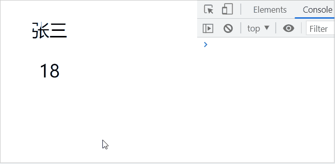
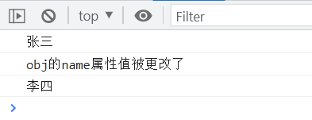
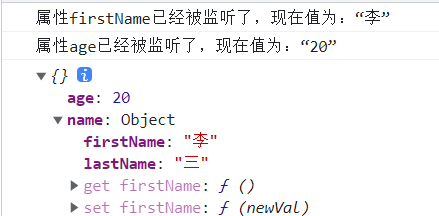
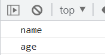

先看个大致原理流程图 ，图片是从前端攻城狮大佬那里复制的。下面会一步步根据流程图一块块解析。
1. 实现数据劫持 相信大家都知道vue2的双向绑定的原理是通过 Object.defineProperty() 来实现数据劫持的。数据劫持 ：指的是在访问或者修改对象的某个属性时，通过一段代码拦截这个行为，进行额外的操作或者修改返回结果。Object.defineProperty() 怎么实现数据劫持的。
1 2 3 4 5 6 7 8 9 10 11 12 13 14 const obj = {}let name = '张三' Object .defineProperty(obj, 'name' ,{ get () { return name }, set (newVal) { name = newVal console .log('obj的name属性值被更改了' ) } }) console .log(obj.name)obj.name = '李四' console .log(obj.name)
defineProperty() 方法，这样每一个变量值变更的时候我们都能知道。
1 2 3 4 5 6 7 8 9 10 11 12 13 14 15 16 17 18 19 20 21 22 23 24 25 26 27 28 29 30 31 32 33 34 35 function defineReactive (data, key, val ) observe(val); Object .defineProperty(data, key, { enumerable: true , configurable: true , get: function ( return val; }, set: function (newVal ) val = newVal; console .log('属性' + key + '已经被监听了，现在值为：“' + newVal.toString() + '”' ); } }); } function observe (data ) if (!data || typeof data !== 'object' ) { return ; } Object .keys(data).forEach(function (key ) defineReactive(data, key, data[key]); }); }; const obj = { name: { firstName: '张' , lastName: '三' }, age: 18 } observe(obj) obj.name.firstName = '李' obj.age = 20 console .log(obj)

可以发现通过递归 实现了变量的所有属性和值的监听
2. 实现订阅器 我们在上面实现了数据劫持，那这个时候我们只需要在变量进行变更的时候去通知视图更新。
1 2 3 4 5 6 7 8 9 10 11 12 13 14 15 16 17 18 19 20 21 22 23 24 25 26 27 28 29 30 31 32 function Dep ( this .subs = [] } Dep.prototype = { addSub (watcher) { this .subs.push(watcher) }, notify () { this .subs.forEach(watcher => watcher.update() }) } } const dep = new Dep()Object .defineProperty(data, key, { enumerable: true , configurable: true , get: function ( if (是否需要添加订阅者) { dep.addSub(watcher) } return val; }, set: function (newVal ) val = newVal; dep.notify() console .log('属性' + key + '已经被监听了，现在值为：“' + newVal.toString() + '”' ); } });
在改变变量值的时候，让订阅器的告诉订阅者该变量变更了，让订阅者执行相应的视图更新操作。
3. 实现订阅者 看上面的代码可以发现if条件里是文字描述，所以在什么时机去添加订阅者呢？先缓存订阅者，然后触发get方法，将订阅者添加进订阅器，再把缓存清空。 所以只要缓存不为空就添加订阅者。
1 2 3 4 5 6 7 8 9 10 11 12 13 14 15 16 17 18 19 20 21 22 23 24 25 26 27 28 29 30 31 function Watcher (vm, exp, cb ) this .vm = vm this .exp = exp this .cb = cb this .value = this .get() } Watcher.prototype = { update () { const oldVal = this .value let value = this .vm.data[this .exp] if (value !== oldVal) { this .value = value this .cb(value) } }, get () { Dep.target = this const value = this .vm.data[this .exp] Dep.target = null return value } } get: function ( if (Dep.target) { dep.push(Dep.target) } return val; },
4. 实现模板解析 这个时候已经实现了observer和watcher的关联，那么哪一些是需要视图更新？
1 2 3 4 5 6 <template > <div id ="app" > <p > {{name}}</p > <p > {{age}}</p > </div > </template >
上面的代码是不是很熟悉，我们这里就简单的实现一个解析器，解析模板数据
1 2 3 4 5 6 7 8 9 10 11 12 13 14 function compileElement (el ) const childNodes = el.childNodes childNodes.forEach(node => let text = node.textContent const reg = /\{\{(.*)\}\}/ ; if (node.nodeType === 1 ) { compileElement(node) } else if (node.nodeType === 3 && reg.test(text)) { console .log(reg.exec(text)[1 ]) } }) } compileElement(document .querySelector('#app' ))

1 2 3 4 5 6 var vm = new Vue({ el: '#app' , data:{ count:1 , } })
接下来我们还需要优化一下compile,可以看到el的传入形式，所以我们需要改一下代码。
1 2 3 4 5 6 7 8 9 10 11 12 13 14 15 16 17 18 19 20 21 22 23 24 25 26 function Compile (el,vm) { this.el = document.querySelector(el) this.vm = vm this.compileElement(this.el) } Compile.prototype = { compileElement (el) { let childNodes = el.childNodes const _self = this childNodes.forEach(node => { let text = node.textContent const reg = /\{\{(.*)\}\}/; if (node.nodeType === 1) { // 如果是element _self.compileElement(node) } else if (node.nodeType === 3 && reg.test(text)) { // 文本内容 const exp = reg.exec(text)[1] const value = this.vm.data[exp] node.textContent = value // 将初始化的数据初始化到视图中 new Watcher(this.vm,exp,(val) => { node.textContent = val }) } }) } }
效果 模板的解析已经简单的实现了，接下来我们来定义一下vue
1 2 3 4 5 6 7 8 9 10 11 12 13 14 15 16 17 18 <div id="app" > <p>{{name}}</p> <p>{{age}}</p> </div> function myVue (option ) this .data = option.data observe(this .data) new Compile(option.el,this ) } const selfVue = myVue({ el: '#app' , data: { name: '张三' , age: 18 } })
可以看到我们通过控制台直接改变变量值，可以实现同步更新视图。文章 ，写的非常好。之前总有一些点没看懂，多看几遍，终于看懂了，并自己手敲实现了一下。